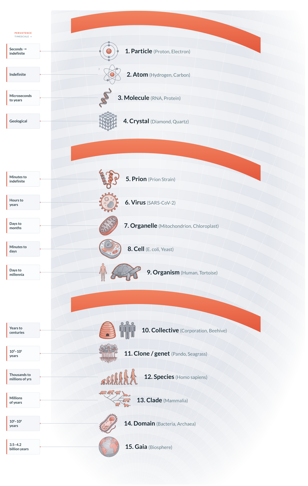

Almost nothing in your body is the thing it was a decade ago. The atoms in your muscles, your blood, even the calcium in your bones have been swapped out by the ordinary traffic of eating and breathing. You are, in the most literal sense, made of different stuff than the person in your old photographs. And yet you have no trouble saying that person was you.
This is not a puzzle only about people. A candle flame is a shape maintained by gas that rushes through it and is gone in milliseconds. A whirlpool in a river is water that has already flowed to the sea. A hurricane, a coral reef, a language, a company, a species — each is a form that outlasts everything it is made of.
The obvious response is to say: fine, what persists is the pattern, not the material. True, but too easy. It leaves the interesting question untouched. Patterns do not simply float free of physics. Most of them dissolve. The ones that don't are doing something, and that something has a cost, and the cost can be measured. That is what we have been trying to pin down — a framework we call Kolmogorov Theory, after the mathematician who taught us to measure how complicated a thing really is by asking for the shortest description of it.
The question is not whether something holds a pattern against time, but how — and what it has to pay.
Time as a sieve
Start with what time does. Left alone, the world churns. Molecules collide, arrangements scramble, differences smear out. Run any physical system forward and almost every microscopic detail about it will be different later. Most structures simply wash away in this churn. Sandcastles do. Smoke rings do.
Think of time, then, as a sieve. What comes through the other side is not the original material — that is long gone — but sometimes a compact description still fits. If a short recipe that described the thing yesterday still describes it today, the pattern has survived. Call that persistence. It is a property of the recipe, not the ingredients.

One clarification saves a lot of confusion later. A pattern is not a lump of the world sitting there waiting to be noticed. It is something an observer picks out because it makes the world cheaper to describe. When you look at a friend, look away, and look back, every photon reaching your eye is different, yet you effortlessly track one continuing person. That continuity lives in your model of them. It is real in the only sense that matters — it earns its keep by shortening the description and letting you predict what comes next — but it is a pattern picked out, not a substance found.
Why some patterns have to work at it
Here is where the flame and the diamond part company. A diamond persists by being hard. Seal it in a box, come back in ten thousand years, and it is still a diamond. It does nothing. Its persistence is free.
A flame is the opposite. Seal it in a box and it dies within seconds. Its shape exists only because fuel and oxygen stream in and heat and soot stream out. The flame is not an object that happens to be burning; the burning is the flame. Its persistence is a continuous purchase, paid every instant.
This suggests a beautifully simple test for telling kinds of persistence apart, and it can be run on almost anything. Seal the system off from the world. Does that help it, or kill it? Diamonds and atoms are helped. Flames, hurricanes, cells and people are killed.
There is a second version of the test that is even more revealing. Instead of cutting off everything, cut the two directions separately. First block the system's ability to act on its surroundings, while letting the world keep pushing on it. Then do the reverse. Whichever cut kills it tells you where the work of staying alive is actually being done.
If blocking the system's own actions kills it, then it was holding itself together: the control lives inside. If blocking the world's influence kills it, then something outside was holding it: the control lives elsewhere. This distinction is worth more than it sounds. A hospital patient on cardiac bypass persists beautifully — but the machine, not the patient, is doing the regulating. A room at a constant 21 degrees persists, but the agent in that story is the thermostat, not the room. Persistence alone doesn't tell you who is in charge. This test does.
What it takes to be in charge
Suppose the test comes back saying: the control is inside. What must be in there?
Remarkably little, and it is always the same three things. Something that models — that compresses whatever is streaming in into a working picture of the world, good enough to anticipate what happens next. Something that evaluates — that boils that picture down to a single verdict, better or worse, which is what a feeling fundamentally is. And something that chooses — that runs the picture forward under different possible actions and picks the one that comes out best.
Model, value, plan. A thermostat has all three, in the most impoverished possible form: a picture consisting of one number, a preference for one setpoint, a choice between on and off. A bacterium swimming up a sugar gradient has all three, with vastly more of each. So do you. The difference between the thermostat and the bacterium is not that one has some extra ingredient the other lacks. It is how rich each of the three is.
And the first of them, the model, is not optional. There is a mathematical result behind this — a sharpened version of an old idea in cybernetics that every good regulator of a system must contain a model of that system. If something reliably keeps a variable in bounds against a world that keeps disturbing it, and it does so for a long time, then it is essentially impossible for it not to have internalized the structure of what it is regulating. The model isn't a metaphor we drape over the machinery. It is forced by the fact that the machinery works.
The bill, in heat
Now the part we find hardest to shake. Why should staying yourself cost anything at all?
Because correcting something means throwing information away. A regulator works with coarse quantities — temperature, concentration, position — each of which lumps together an astronomical number of microscopic possibilities. When it pushes a wandering variable back to where it belongs, it maps many different starting states onto one. That is a many-to-one operation, and many-to-one operations destroy information about where you had been.
And here physics presents a bill. Rolf Landauer showed in 1961 that erasing information is not free: every bit you discard must be paid for with a minimum quantity of heat dumped into the environment. It is one of the few places where the abstract world of information touches the concrete world of thermodynamics, and it has been confirmed in the laboratory. So any macroscopic system that keeps itself in shape is necessarily warming its surroundings. Not incidentally. Constitutively.
Heat is the price of not keeping the information you would need to run yourself backwards.
This yields a prediction that is sharp enough to be wrong, which is the best kind. The bill does not scale with how big your model of the world is. It scales with how fast you throw model-relevant information away. A vast model that rarely needs revising is cheap to maintain. A small model constantly churned by a surprising world is expensive. Enormous memory, cheap; relentless updating, costly.
There is a version of this claim for brains, and it is testable with today's instruments. Neural activity has a measurable arrow of time — run the recording backwards and you can tell. That asymmetry ought to track not how excited a person is, and not how surprising the world is in raw terms, but how much genuinely model-relevant information is being discarded. Surprise that teaches you something is different from surprise that is merely noise, and the difference should show up in the physics of the tissue.
The ladder, and where machines sit on it
The definition is deliberately indifferent to scale, which is what makes it interesting. The same test applies to a protein, a cell, an organism, an ant colony, a corporation, a species, and the biosphere. Each is a pattern holding itself together against the churn; each is made of smaller such patterns. Your own cells were free-living organisms once, before they became components of something larger. A colony is an agent whose parts are agents. So, arguably, is a country.

Which brings us to the machines. Where does a large language model sit?
Squarely, and lopsidedly, on the first of the three legs. Training such a model to predict the next word is, mathematically, a compression task: getting better at prediction is exactly the same thing as finding a shorter encoding. To do it well the system has no choice but to absorb deep regularities about language, and through language about the world. The result is an extraordinarily rich model — possibly the richest artificial model of anything we have built.
What it does not have is the other two legs in any load-bearing form. Nothing in its training ties it to its own continuation. Its goals arrive from outside, in the prompt. Add memory, tools and a control loop and it becomes more agent-like, but the objective is still handed to it. Compared to a bacterium — which has an impoverished model but an objective that is unmistakably its own — today's AI is the mirror image: magnificent model, borrowed purpose.
A computer is not an agent; it is a machine capable of running agents. A language model is much the same — a substrate rich enough to host an agent, once someone supplies an objective and a loop. The modeling part is largely built. The part that would make a system care whether it continues is the part still being added, and it is the part that does the real work.
Where objectives come from — and why it matters now
Living things did not have their objectives handed to them by a designer. They got them from the sieve. Over billions of years, the only goals still around are the ones that happened to favor continuing — hunger, pain, fear, warmth, attachment. None of them says "persist"; each of them was, historically, in the service of persisting. Evolution did not install a mission statement. It installed appetites that worked.
This also explains a characteristic way for things to go wrong. An agent that can tamper with the signal of value rather than the state the signal evolved to track will optimize the signal. That is addiction, in one sentence. It is also the shape of the problem people worry about with powerful optimizing machines. Same failure, different substrate.
And it suggests that we may be thinking about AI safety at the wrong level. The instinct is to write the right objective into the machine — to specify. But the systems that have solved this problem before did it differently: they built environments in which the surviving strategies were the tolerable ones. Two knobs, not one. You can set a goal, or you can bound what actions are available at all. Walls in a nest and laws in a state are the same kind of object, and an action that is unavailable requires no incentive against it.
The framework offers, at least, a criterion you can measure: does the new agent break the persistence of the pattern that hosts it? Humanity has been offloading its thinking onto external machinery for a long time — writing, then instruments, then computers, now this. All of it was mutualistic while it remained a tool. It becomes a genuinely different question the moment the tool acquires an objective of its own.
Pattern, persist
There is a single imperative here that reads sensibly at every level, which is the main reason we trust it. At the level of raw physics it is not a command but a filter: the things that are still around are the things that stayed. At the level of an organism it is the goal that evolution installed, felt from the inside as wanting to live. At the level of a society, or a species, or whatever we are jointly becoming with our machines, it is the criterion that separates arrangements that hold together from arrangements that consume their hosts.
Being some sort of agent turns out to be cheap; the universe is full of thermostats. Persisting is not. What separates a rock from a cell from a mind is not whether it holds a pattern against time, but how — where the control sits, what it must burn to keep going, and whether it is working, in the end, for its own continuation.